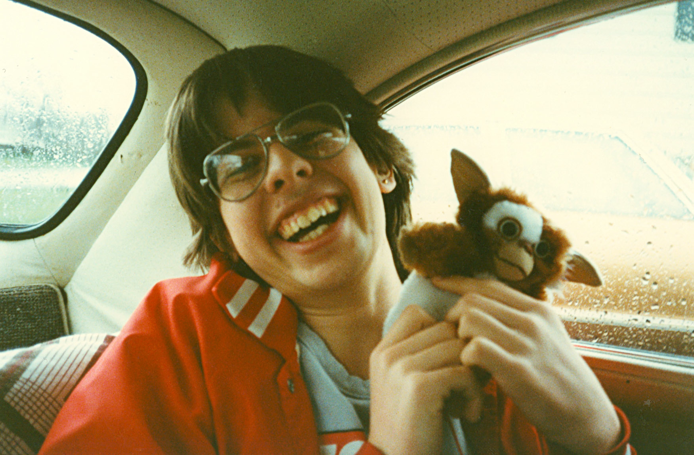
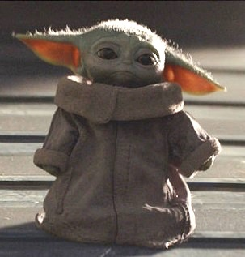
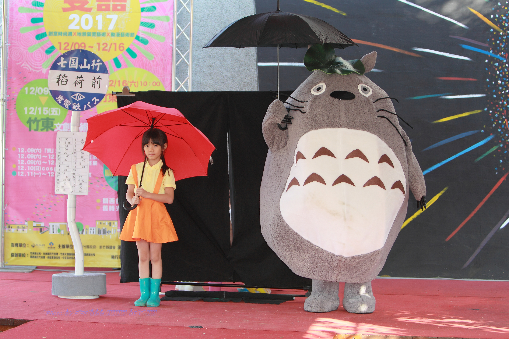
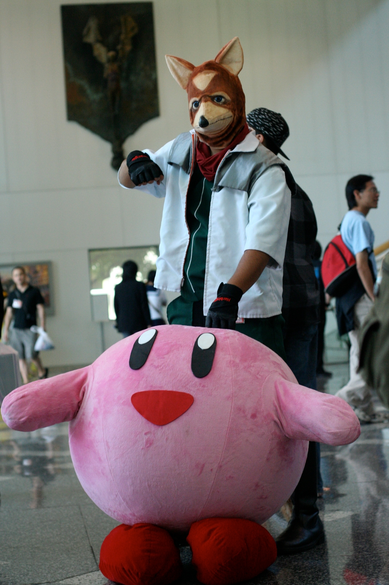
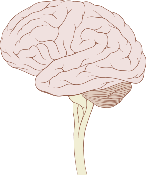
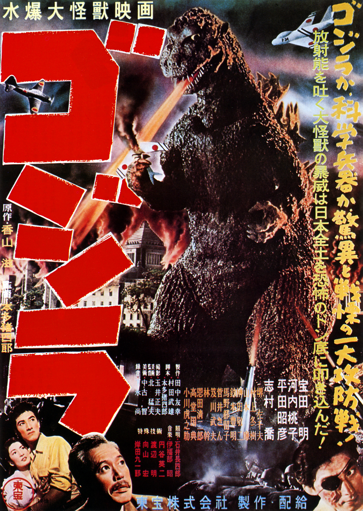

SCRIPT TO SCREEN · UT AUSTIN
Audience attention, entertainment psychology, and what the research actually tells us about predicting success
The Industry Problem
Hollywood, streaming platforms, the video game industry, and advertisers collectively invest hundreds of billions annually creating content. They still cannot reliably predict what will capture audience attention.
The current toolkit: gut instinct, focus groups, and behavioral metrics — clicks, completions, watch time. Screenwriting vocabulary and trends dominate discussion.
The twist: This is not a data problem. There is more audience data now than at any point in history. It is a framework problem — nobody has the right theoretical structure for knowing what to measure in the first place.
40+ Years of Research
Limitation
Cannot explain character-less entertainment — music, landscapes, game mechanics, ASMR. And cannot resolve the suspense paradox.
Limitation
Correctly identifies the Bayesian mechanism but provides no structure for predicting when entertainment will harm audiences versus help them.
THE REWATCH PARADOX
If attention depends on novelty and uncertainty, why do 92% of U.S. audiences rewatch content they have already seen — and enjoy it just as much?
THE MEASUREMENT PROBLEM
Neither framework tells you what to measure in content. Why code violence rates and not editing pace? No principled basis for selecting which features are consequential.
THE INTENSIFICATION PUZZLE
Monsters get scarier decade-to-decade. Characters get cuter. Editing gets faster. Neither tradition can explain why entertainment systematically intensifies in predictable directions.
THE HARM PREDICTION GAP
Neither framework predicts which audiences are harmed, in which domains, under what conditions. Harmful effects are treated as exceptions — not as something theory should have seen coming.
Shannon & Weaver, 1948
The Producer Turn
Every prior theory asks: what does entertainment do to audiences? This misses something fundamental — the question of why entertainment gets made.
Producers have goals: profit, political influence, status, brand awareness. Audience benefit is a means, not the end. Entertainment exists because it captures attention in service of something producers want.
Entertainment is a deliberately iterated technological system — not a natural phenomenon, not a side effect of human creativity, but a technology built by people for a purpose, refined through competitive/collaborative trial-and-error over centuries.
Screenwriters, directors, studios, agencies — a field that selects which tropes, story formulas, and techniques survive. The ones that survive are the ones that capture attention.
Tinbergen, 1953
Niko Tinbergen discovered that birds would abandon their own real eggs to incubate fake eggs with larger, more exaggerated spots. The supernormal stimulus — unnaturally intense — hijacked an evolved response more effectively than the natural stimulus it was designed for.
The claim: Entertainment producers have been doing exactly this to human audiences — through cultural-technological iteration rather than biology — and much faster than evolution could manage.
Entertainment tropes, story formulas, and genre conventions are superstimuli: systematically exaggerated stimuli that tap into evolved psychological mechanisms more intensely than natural stimuli ever could.
Producers don't consciously design superstimuli. They iterate, amplify what works, and the superstimuli result is emergent — the accumulated residue of what captured attention across centuries of competition.
Dubourg et al., 2024 · 73 cognitive mechanisms
SELF
Training montages, curiosity mysteries, resource-accumulation fantasy
→ Underestimate mastery time; elevated conspiracy belief
THREATS
Bigger monsters, more violence, body horror, sophisticated criminals
→ Mean world syndrome; overestimate crime rates
COOPERATORS
Superhuman doctors, heroic self-sacrifice, idealized friendships
→ CSI Effect; real-friendship dissatisfaction
COMPETITORS
Rags-to-riches, exploitation, comeuppance narratives
→ Inflated meritocracy beliefs; schadenfreude endorsement
MATES
Idealized bodies, soulmate narratives, sexual availability
→ Unrealistic partner standards; relationship dissatisfaction
KIN
Children in danger, idealized family bonds, parental sacrifice
→ Stranger danger panic; helicopter parenting; family dissatisfaction
Source: Dubourg et al. (2024). The Cognitive Foundations of Fictional Stories. Psychological Review.
Dubourg et al., 2024 · Figure 23




Superstimuli in Action
These images are not accidents of taste. They are the accumulated result of a competitive selection process across decades — each iteration slightly more exaggerated than the last.
Why Superstimuli Work
The classical model of attention — passive filtering of incoming stimuli — is wrong. The brain does not wait for input and then respond.
Predictive processing (Friston, 2010; Clark, 2013): The brain continuously generates probabilistic models of the world and updates them when reality deviates from prediction. Attention is the brain's way of precision-weighting which prediction errors are most informative.
WHAT SUPERSTIMULI DO
They trigger high-magnitude prediction errors in evolved sensory and motivational systems — larger errors than any naturally occurring stimulus would produce. The brain cannot ignore them.
THE PRODUCER INSIGHT
Producers don't know Bayesian inference. They just know what gets a reaction. Through trial-and-error, they've been engineering maximal prediction errors in evolved systems for centuries.

Prediction error minimization
as the basis of attention
EACH SHAPES THE OTHER · THE RATCHET ONLY RUNS ONE DIRECTION
The Consequence
If the brain updates its probabilistic model of the world from experience — and if entertainment systematically presents an exaggerated version of the world — then heavy consumers should develop systematically distorted beliefs. This is the mechanism behind Gerbner's cultivation theory, derived here from first principles rather than discovered inductively.
Table 1 · Lewis (under review, JMP) · 23 falsifiable predictions across 6 domains
A 40-Year Puzzle
Resolution — hierarchical Bayesian processing: The predictive mind operates at multiple levels simultaneously. Familiarity at high levels enables novelty at low levels.
HIGH-LEVEL PREDICTIONS
Broad narrative structure — "hero prevails," "romance succeeds." Knowing the ending creates certainty here → reduces global uncertainty → produces positive affect.
LOW-LEVEL PREDICTIONS
Moment-to-moment stimuli — specific scares, sound design, dialogue delivery, superstimuli activations. These generate new prediction errors every time.
Genre conventions are not laziness — they are a cognitive service to the audience. Reliable high-level structure minimizes cognitive load so low-level superstimuli can do their work.

Gojira (Godzilla), 1954 · A threat-domain superstimulus that
generated sequels for 70 years — the suspense paradox in action
What This Means
The Close
Thank you.
Robert Lewis, Ph.D. · robert.lewis.msu@gmail.com · Precocity
"The Making of Media Entertainment" · under review, Journal of Media Psychology